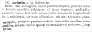

Click on images to enlarge
{kind=link}

Fig. 1. Paropsis coriaria, description
Name
Paropsis coriaria Chapuis, 1877
Corresponds to
Does not seem to correspond to any of the species known to the author.
Diagnosis and Notes
Blackburn (1896, p.640) indicates that he has not seen the type or any specimens of coriaria and does not include it in his key to the species.
Though this is larger than most species of Trachymela, it is difficult to find a species from the Melbourne area that would fit the description well. One possible candidate may be Ta210 (T. acclivis), which does have a medium longitudinal ridge on the pronotum and in some specimens (often more noticeable in teneral ones) has the deeply punctate-striated elytra with verrucae more prominent on alternate interstices towards the apex.
Original description
Translation of original description (Figure 1) by ChatGPT, 04/2026:
Oval, broad, dark brown–pitchy. Head punctate and rugose. Pronotum densely and strongly punctate, somewhat rugose, impressed at the sides, more deeply punctate-rugose there, marked with a blunt tubercle; with a smooth, slightly raised longitudinal median line, shortened at both ends. Elytra reddish-brown, variegated with pitchy markings, deeply punctate-striated; all interstices nearly equal, the alternate ones toward the apex tuberculate or nodulose. Length: 10 mm. Melbourne.
References
Chapuis, F. 1877, "Synopsis des espèces du genre Paropsis", Annales de la Société Entomologique de Belgique (Comptes-rendus), vol. 20, 67-101 (page 92).
Copyright © 2026. All rights reserved.